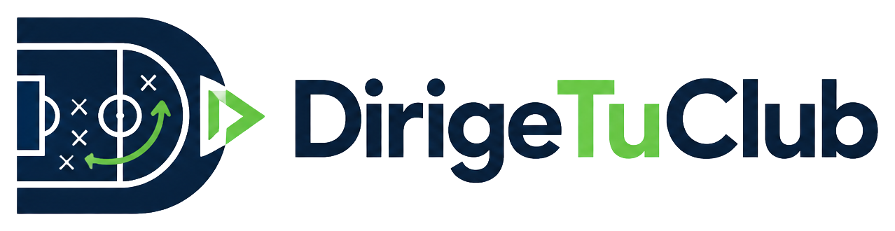

Pizarra táctica
Mueve a los jugadores con el dedo y dibuja encima: flechas rectas y curvas, círculos, trazo libre y notas de texto. Guarda todas las variantes que quieras y pasa de una a otra durante la charla.

AccederPara cuerpos técnicos de fútbol
Pizarra táctica, plantilla, formaciones y la convocatoria lista para el grupo de WhatsApp. Todo en el mismo sitio y sincronizado entre tu móvil, la tablet y el PC del vestuario.
Empezar es gratis. Sin instalar nada y sin tarjeta.
Qué hace
Mueve a los jugadores con el dedo y dibuja encima: flechas rectas y curvas, círculos, trazo libre y notas de texto. Guarda todas las variantes que quieras y pasa de una a otra durante la charla.
Una ficha por jugador con foto, dorsal, demarcación y notas. El estado —disponible, duda, lesionado o sancionado— se ve de un vistazo, así que sabes con quién cuentas antes de dar la lista.
4-3-3, 4-2-3-1, 4-4-2, 3-5-2, 3-4-3 o campo libre. Cambias de dibujo y los jugadores se colocan solos; a partir de ahí ajustas lo que necesites y lo guardas como una variante más.
Compone el mensaje del partido —rival, campo, fecha, hora de citación y lista de convocados— y lo abre en WhatsApp para que elijas el grupo. Tú das a enviar: la app no manda nada por su cuenta.
Tarda menos que dibujar el once en un folio.
Acceder / RegistrarseGratis para empezar. Los planes de pago llegarán más adelante.